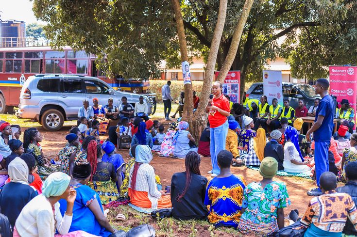

Formation en techniques durables
02 août 2026

AGRI-TOGO a organisé une formation destinée aux membres de la coopérative afin de renforcer leurs connaissances en agriculture durable.
Cette formation a permis aux producteurs d'apprendre de nouvelles pratiques agricoles respectueuses de l'environnement, notamment la gestion des sols, l'utilisation raisonnée des ressources naturelles et l'amélioration des rendements.
À travers ces initiatives, AGRI-TOGO accompagne les producteurs dans la modernisation de leurs méthodes de production tout en préservant les ressources naturelles pour les générations futures.
← Retour aux actualités